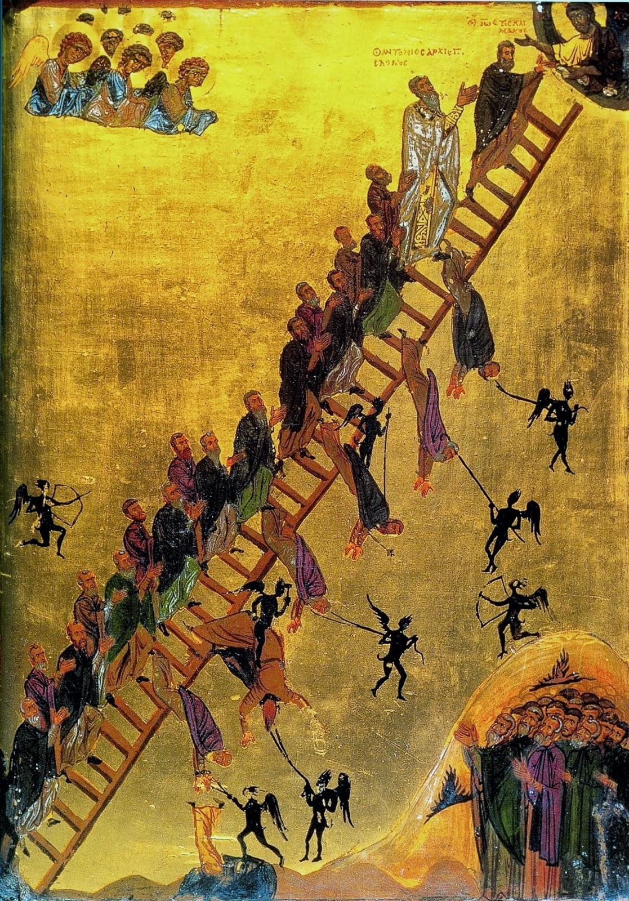

Scala Paradisi
Symphonic Meditation after St. John Climacus

Scores & Recordings
Recording
Summary
Scala Paradisi is a discourse on ascent repeatedly broken and painfully resumed. From a massive, heavily divided string body struggling upward toward light to the emergence of a psalm-like, Byzantine-inflected melodic idiom capable of dialogue and transformation, the work turns Saint John Climacus's ladder into a structural source for rupture, reiteration, and hard-won fulfilment rather than into explicit programme music.
Imprint
| Orchestration | orchestra with piano |
|---|---|
| Lyrics | — |
| Duration | 19:33′ |
| State | Finished |
| Completed | 2026 |
| Premiered | — |
| Performed by | — |
| Honors | |
| Copyright | Claudius Iacob |
Program notes
Scala Paradisi, a symphonic poem that deliberately refuses any romantic associations, is a compositional study of the continuity-discontinuity binomial. The patristic and literary impetus named in the subtitle offers an ideal framework for exploring constructions and deconstructions, convergences and divergences, ascents and collapses and, above all, reiterations.
Formal Considerations
For analytical purposes, the piece may be divided into two clearly demarcated sections of approximately equal duration. In performance, however, the two sections should not be separated more than is indicated in the score.
The musical dramaturgy of the two sections is evident and therefore easy to follow. In the first section, a massive structure, entrusted to excessively divided strings, progresses unevenly and with manifest heaviness from the lowest register, the orchestra's “dark” zone, toward “light”, toward the upper extreme, while encountering meteoric distractions of the most varied types. Most of these distractions are initially seductive, but soon expend themselves. They become caducous and collapse back into the illusion from which they arose, at which point the painful original ascent restarts — it does not resume.
The second section introduces a new melodic idiom, close in spirit to psalmody and Byzantine chant, and also, in the brass, the first thematic element capable, through its salience, force, and consistency, of entering into dialogue with the opaque, monolithic string material introduced in the first part. This dialogue — pursued in as scholastic a spirit as possible, through classical procedures of thematic development — initiates a process of reciprocal recognition between the two entities, culminating in the sublimation and “fulfilment” of the former.
Harmonic Considerations
The piece continues the harmonic explorations encountered in my previous symphonic works, especially Fúlgura and Hortus conclusus. Present here as well are metamorphic harmonies (that is, polychords that alter their color through dynamic variation in certain key components), parallel consonant but non-tonal harmonies, strongly reminiscent of Ralph Vaughan Williams's chordal language, and moments of “pseudo-tonal harmony” (built from false relations, non-functional consonance, and pedals or pedal points).
To these, the present work adds a process of “amplifying” the melodic notes, one that seeks to foreground transitional dissonances rather than conceal them. This work also experiments with a new kind of thick, impasto harmony, like an Auerbach painting in which centimeters of paint, layer upon layer, already begin to model a third dimension.
Melodic Considerations
Where it does not operate minimally, by means of oligochords, the melodic writing of this music is strongly grounded in gesture, an explicit, sought, and sustained gesturality, reinforced by the dynamic plane as well.
To this the piece adds thematic material that courts repetitive-developmental minimalism and a radicalization of stretto, which becomes here a texture-generating mechanism — in the sense established by Ștefan Niculescu — through the superposition of the same melodic line at different “speeds”.
Rhythmic Considerations
Scala Paradisi is a score in which syncopation ceases to be the exception and becomes the norm, and in which the performers are almost asked to rid themselves of the traditional divisional system, to “feel” and intuit rhythm in its intimate nature, as a musical event of varying temporal ages.
It is therefore a music in which generalized syncopation ceases to be syncopation, transcends hemiola, and ventures into the domain of non-divisional rhythm.
Orchestration Considerations
The work is scored for a generous string section; brass, four horns, two trumpets, and a tuba, but no trombones; five woodwinds, piccolo, flute, oboe, B-flat clarinet, and bassoon, one player to each part; and piano. Although the piano does not stand in a soloistic relation to the orchestra, functioning here rather as an instrument of percussion and color, certain detachments into the foreground proved unavoidable.
The orchestral choice closely supports the harmonic plane and a certain deliberately assumed poetics of the work, one in which the constant evasion of simultaneity in the attack and decay of sounds implies a world of shadows in perpetual motion and metamorphosis: contours that stand clear for a moment, then immediately tremble and fade.
The fusion of orchestration and harmony is most readily observed in the passages written exclusively for the richly divided strings, six violin divisions, three viola divisions, four cello divisions, and three double-bass divisions.
Extra-Musical Considerations
John Climacus, known in Romanian tradition as Ioan Scărarul, was a monk and ascetic writer who lived at Saint Catherine's Monastery on Mount Sinai in the seventh century. His principal work, Scala Paradisi (Κλίμαξ τοῦ Παραδείσου), describes a spiritual ascent in thirty steps, from renunciation of the world to perfection in love and contemplation. Written initially for monastic use, the book long ago outgrew that frame, becoming one of the foundational texts of Eastern Christian spirituality and a constant reference in universal mystical literature.
What constituted the impetus for this composition was not the doctrinal content of Scala Paradisi, nor any intention to illustrate its steps musically. Two structural ideas, drawn from the internal logic of Climacus' work, provided the formal impulse of the piece: the unfinished character of the ascent, forever resumed, and the possibility that a rung once gained may be lost in its entirety, obliging one to begin again from the same absolute point of departure. In my view, these two ideas — interrupted continuity and reiteration as destiny rather than variant — have implicitly found here a more faithful musical expression than any explicit programme could have allowed.
Scala Paradisi is not, therefore, programme music. Its title and subtitle do not propose a key of interpretation; they acknowledge a source.